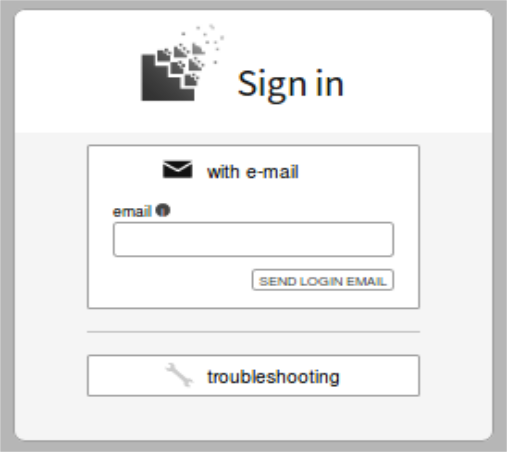
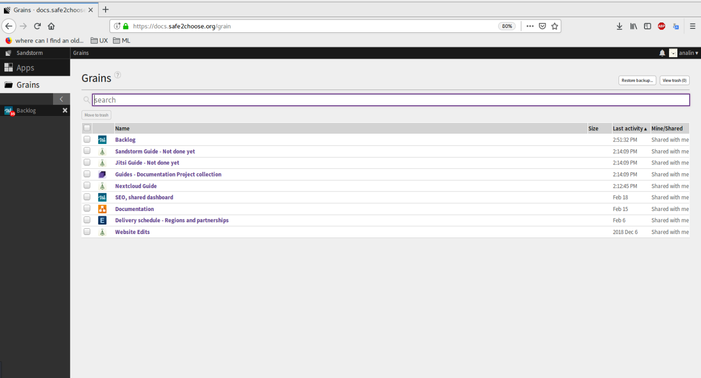
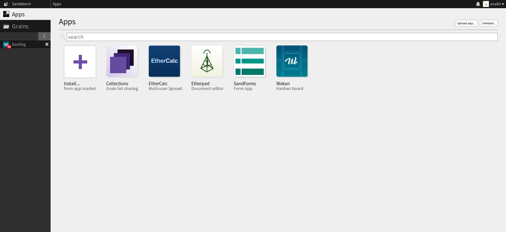
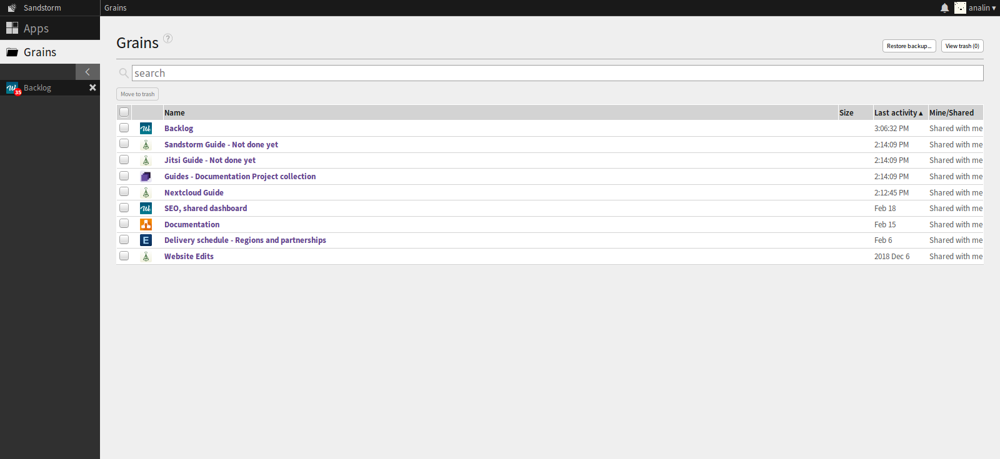
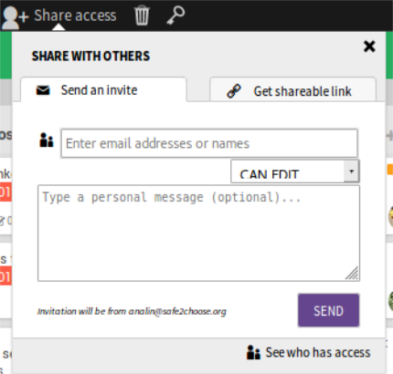
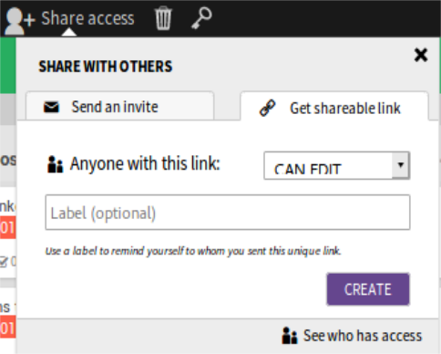
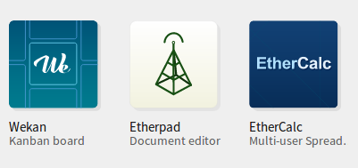
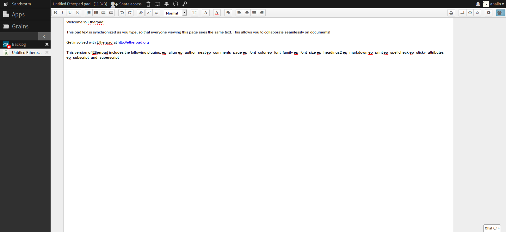
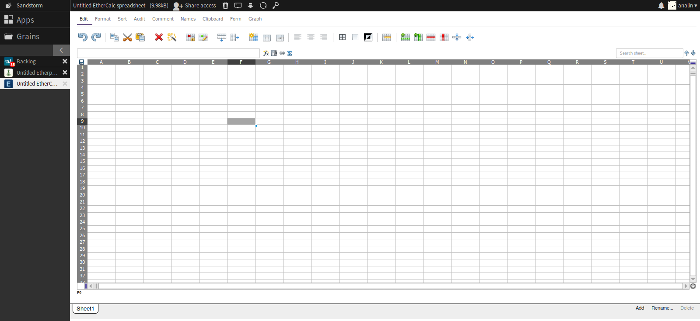
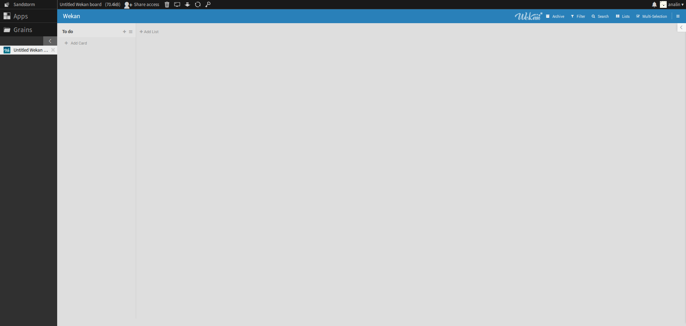

Sandstorm is a self-hostable web productivity suite. Collaborate with others using apps for chatting, file storage, document editing, task management, and more
After you finish with your Thunderbird and Signal installation, send Cecilia (tech team leader) a message asking for your Sandstorm access. She will confirm it to you.
Then, go to: https://docs.safe2choose.org to access the site.
Entering the site, you’ll have to sign in using your s2c/ps/htu email account. Sandstorm will send you a login email which contains a token. You’ll have to copy that token and write it on the Sandstorm’s site. Then, confirm it. This is the first screen you’ll see after the login:
Here’s the section where you can find all the apps available for Sandstorm. Etherpad and Ethercalc are the ones we use the most, but you can explore and look for more options depending of your needs.
Grains section Basically a Grain is a file. In this section, you can find all the files you create and the files that were shared with you. You can look for a specific file by clicking on the “Search” box.
Each grain has a “Share access” section at the top, next to the name. You can share the link by sending an invitation to it.
Or by getting a shareable link.
As we mentioned in some later, there are 2 apps that we use the most. The first one is Etherpad and the second one is Ethercalc.One of the first things you have to do to get ready with Sandstorm is to install those apps as we showed you
Description: Etherpad allows you to edit documents collaboratively in real-time, much like a live multi-player editor that runs in your browser. Write articles, press releases, to-do lists, etc. together with your friends, fellow students or colleagues, all working on the same document at the same time.
Description: EtherCalc is a web spreadsheet. Your data is saved on the web, and people can edit the same document at the same time. Everybody's changes are instantly reflected on all screens. Work together on inventories, survey forms, list management, brainstorming sessions and more!
Description: Wekan is a online kanban board, is a workflow visualization tool that enables us to optimize our work, by helping us to see the big picture, give us a perspective over all the projects, and dive into the details of every task.
Allows us to stay organized and in communication, because everyone knows the status of tasks as cards move across lists until Done and organize the essential info for each request
